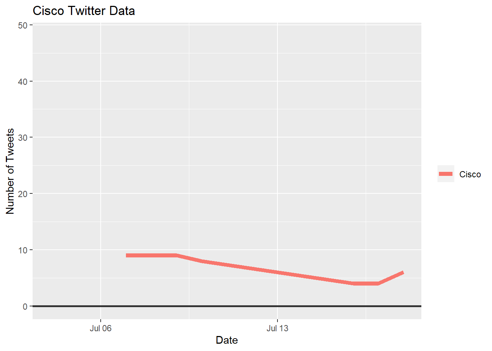
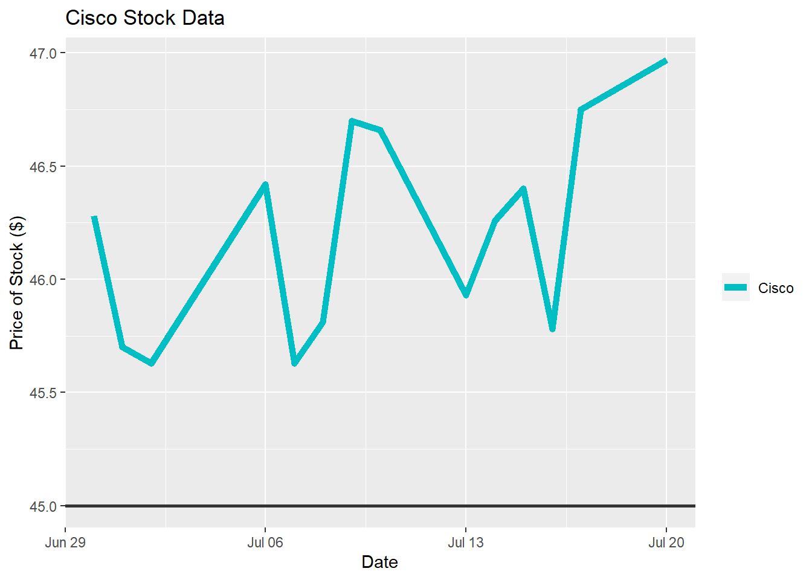
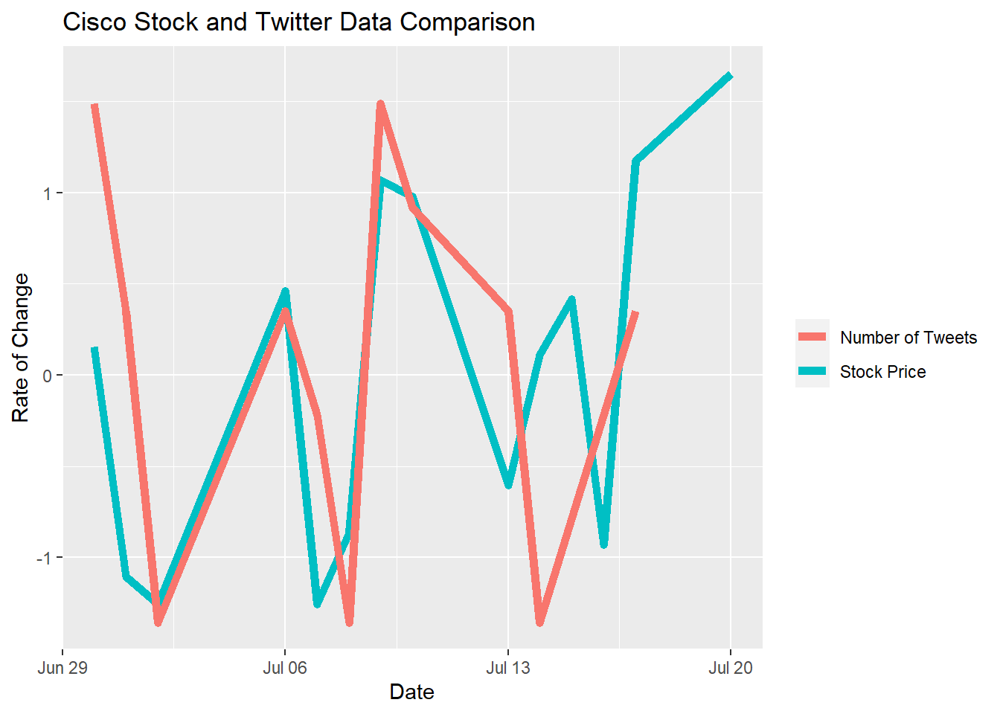

8 Cisco Data
8.1 Cisco Data Visualization
We have included plots for Cisco’s Twitter engagement, stock price, and a comparison of the two against one another. The first plot shows the change in engagement through the Twitter handle “@Cisco_Support”. The second plot shows the change in the stock price over the course of the three weeks we collected data. In the third plot, you can see that based on the rate of change, the Twitter and stock data are almost identical and represent an unmistakable relationship.
ggplot(filter(new_all_data, CompanyName=="Cisco"), aes(x = New_Date,y= Company_Date)) +
geom_line(aes( color= CompanyName), lty = 1, size = 2) +
geom_hline(yintercept = 0, size = 1, color="#333333") +
xlim(x= c(Sys.Date()-30, NA))+
theme(legend.title=element_blank())+
labs(title="Cisco Twitter Data", x= "Date", y= "Number of Tweets")
ggplot(filter(companystock, Company=="Cisco"), aes(x = StockDate,y= Price)) +
geom_line(aes( color= Company), lty = 1, size = 2) +
geom_hline(yintercept = 45, size = 1, color="#333333") +
scale_colour_manual(values = c(Cisco="#00BFC4"))+
theme(legend.title=element_blank())+
labs(title="Cisco Stock Data", x= "Date", y= "Price of Stock ($)")
ggplot(filter(companystock, Company=="Cisco"))+
geom_line(aes(x= StockDate, y= scale(Price), color = "Stock Price"), lty = 1, size = 2)+
geom_line(aes(x= StockDate, y= scale(Tweets), color = "Number of Tweets"), lty = 1, size = 2)+
theme(legend.title=element_blank())+
labs(title="Cisco Stock and Twitter Data Comparison", y= "Rate of Change", x= "Date")
8.2 Cisco Conclusion
Cisco’s data is the most visibly coordinated among every company’s Twitter and stock data. The price of the company’s stock doesn’t vary by more than $1.50 and the number of tweets doesn’t vary by more than 10 tweets. While the amount of engagement on Cisco’s Twitter handle was limited, the data we extracted and analyzed still shows a trend that supports our hypothesis. There are points on the third plot where the Twitter and stock data overlap completely, which suggests the relationship between the two is near perfect. The third plot also shows visual consistency through its plotted peaks and dips, displaying the ideal twitter and stock relationship trend with regards to whether company data supports our hypothesis.